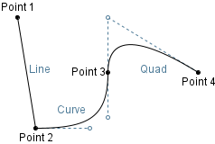
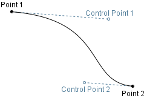
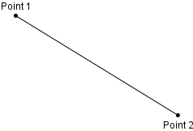
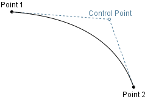

Class Path
- All Implemented Interfaces:
java.lang.AutoCloseable
public class Path extends Drawable
Draw an arbitrary path

Paths are constructed from an arbitrary number of segments. Each segment is a Line, QuadCurve, or
CubicCurve drawn between the end point of the prior segment and new point. For example, in the diagram above,
the path is made of three segments:
- A line from Point 1 to Point 2
- A cubic curve from Point 2 to Point 3
- A quadratic curve from Point 3 to Point 4
The path above could be drawn with the following sequence of instructions:
Path p = new Path();
p.moveTo(20, 16); // Point 1
p.lineTo(40, 140); // Point 2
p.curveTo(
100, 140, // first Bézier control point
120, 127, // second Bézier control point
120, 78 // Point 3
);
p.quadTo(
120, 16; // quadratic control point
220, 78 // Point 4
);
All paths start with empty geometry and are then built segment by segment using moveTo(double, double),
lineTo(double, double), quadTo(double, double, double, double), and
curveTo(double, double, double, double, double, double) methods to extend the existing geometry.
Note that the first segment added to the path must be a moveTo(double, double) instruction, to locate
the first point in the path. Additional moveTo(double, double) calls may be made as the path is defined,
creating a discontinuous path.
Paths are particularly complex (and therefore flexible and powerful!). As the underlying geometry of this object
is stored as a Path2D, it is worth perusing that documentation for information on details like approaches to
filling, stroking, or transforming paths. More detailed explanations of how the Bézier curve segments are computed
can be found in QuadCurve and CubicCurve.
- Author:
- Seth Battis
-
Field Summary
Fields inherited from class org.gannacademy.cdf.graphics.Drawable
NO_STROKE, TRANSPARENT -
Constructor Summary
Constructors Constructor Description Path(int windingRule, int initialCapacity, DrawingPanel drawingPanel)Construct a path with empty geometry, a winding rule and expected number of segmentsPath(int windingRule, DrawingPanel drawingPanel)Construct a path with empty geometry and a winding rulePath(java.awt.Shape shape, java.awt.geom.AffineTransform transformation, DrawingPanel drawingPanel)Construct a path fromShapegeometry and a transformationPath(DrawingPanel drawingPanel)Construct a path with empty geometry -
Method Summary
Modifier and Type Method Description voidclosePath()Close the path by drawing a straight line back to the starting pointvoidcurveTo(double ctrlX1, double ctrlY1, double ctrlX2, double ctrlY2, double x3, double y3)Add a cubic curve segment to the pathprotected java.awt.geom.Path2DgetShapeAsPath()UnderlyingPath2DgeometryvoidlineTo(double x, double y)Add a line segment to the pathvoidmoveTo(double x, double y)Select a new starting point for subsequent path segmentsvoidquadTo(double ctrlX1, double ctrlY1, double x2, double y2)Add a quadratic Bézier curve segment to the pathvoidrotate(double theta, double anchorX, double anchorY)Rotate the shape around an anchor pointvoidscale(double scaleFactorX, double scaleFactorY)Rescale the shape by a factor along the X and Y axesvoidsetHeight(double height)Adjust height of bounding boxvoidsetLocation(double x, double y)Translate the shape to a locationvoidsetShape(java.awt.Shape shape)Replace the underlyingShapegeometry of the drawable componentvoidsetWidth(double width)Adjust width of bounding boxvoidshear(double shearFactorX, double shearFactorY)Shear the shape by a factor along the X and Y axesvoidtransform(java.awt.geom.AffineTransform transformation)Transform the pathvoidtranslate(double dx, double dy)Translate the shape from one location to anotherMethods inherited from class org.gannacademy.cdf.graphics.Drawable
close, contains, contains, contains, contains, draw, getBounds, getDrawingPanel, getFillColor, getHeight, getLocation, getPathIterator, getShape, getStroke, getStrokeColor, getWidth, getX, getY, intersects, intersects, removeFromDrawingPanel, setDrawingPanel, setFillColor, setStroke, setStrokeColor, setX, setYMethods inherited from class java.lang.Object
clone, equals, finalize, getClass, hashCode, notify, notifyAll, toString, wait, wait, wait
-
Constructor Details
-
Path
Construct a path with empty geometry
- Parameters:
drawingPanel- on which to draw
-
Path
Construct a path with empty geometry and a winding rule
- Parameters:
windingRule- The winding rule to determine how to fill the shapedrawingPanel- on which to draw
-
Path
Construct a path with empty geometry, a winding rule and expected number of segments
The path will expand to contain as many segments as are added to it, but setting the initial capacity to your best guess gains some small amount of efficiency in reducing resizing operations.
- Parameters:
windingRule- The winding rule to determine how to fill the shapeinitialCapacity- Anticipated number of segmentsdrawingPanel- on which to draw
-
Path
public Path(java.awt.Shape shape, java.awt.geom.AffineTransform transformation, DrawingPanel drawingPanel) throws DrawableExceptionConstruct a path from
Shapegeometry and a transformation- Parameters:
shape- of underlying geometrytransformation- to applyshape(i.e. scale, translation, rotation)drawingPanel- on which to draw- Throws:
DrawableException- Ifshapecannot be converted to aPath2D(a highly unlikely eventuality)
-
-
Method Details
-
getShapeAsPath
protected java.awt.geom.Path2D getShapeAsPath()UnderlyingPath2Dgeometry- Returns:
- Underlying
Path2Dgeometry
-
setShape
Description copied from class:DrawableReplace the underlyingShapegeometry of the drawable component- Overrides:
setShapein classDrawable- Parameters:
shape- of geometry- Throws:
DrawableException- will be thrown ifshapeis not compatible with the component (e.g trying to redefine anArcas aLine)
-
setWidth
public void setWidth(double width)Description copied from class:DrawableAdjust width of bounding box
-
setHeight
public void setHeight(double height)Description copied from class:DrawableAdjust height of bounding box -
curveTo
public void curveTo(double ctrlX1, double ctrlY1, double ctrlX2, double ctrlY2, double x3, double y3)Add a cubic curve segment to the path

The cubic Bézier curve starts at the current end point of the path and extends through two control points. For more details on how cubic Bézier curves are computes, refer to
CubicCurve.- Parameters:
ctrlX1- X-coordinate of first control pointctrlY1- Y-coordinate of first control pointctrlX2- X-coordinate of second control pointctrlY2- Y-coordinate of second control pointx3- X-coordinate of end pointy3- Y-coordinate of end point
-
lineTo
public void lineTo(double x, double y)Add a line segment to the path

The line starts at the current end point of the path. For more details on drawing lines, refer to
Line.- Parameters:
x- coordinate of end pointy- coordinate of end point
-
setLocation
public void setLocation(double x, double y)Description copied from class:DrawableTranslate the shape to a location
- Specified by:
setLocationin classDrawable- Parameters:
x- coordinate of shape origin at new locationy- coordinate of shape origin at new location
-
moveTo
public void moveTo(double x, double y)Select a new starting point for subsequent path segments
Path segments are defined relative to the end point of the previous segment.
moveTo()must be the first instruction to the path to set a starting point for following segments. This method can also be used to define a discontinuous path.- Parameters:
x- coordinatey- coordinate
-
quadTo
public void quadTo(double ctrlX1, double ctrlY1, double x2, double y2)Add a quadratic Bézier curve segment to the path

The quadratic Bézier curve segments starts at the end point of the previous path segment, through a control point to the end point. For more information on computing quadratic Bézier curves, refer to
QuadCurve.- Parameters:
ctrlX1- X-coordinate of control pointctrlY1- Y-coordinate of control pointx2- X-coordinate of end pointy2- Y-coordinate of end point
-
closePath
public void closePath()Close the path by drawing a straight line back to the starting point
-
transform
public void transform(java.awt.geom.AffineTransform transformation)Transform the path
An "affine transformation" is one in which the spatial relationships of the points of the path are not changed relative to each other — scale, translation, and rotation. Refer to
AffineTransformfor more information.- Parameters:
transformation- to be applied to the path
-
translate
public void translate(double dx, double dy)Translate the shape from one location to another
Note that
dxanddyare the change in in X- and Y- coordinates, and are therefore relative to the current position of the shape, and not an absolute location. (To move a shape to an absolute location, use thesetLocation(double x, double y)method.) -
rotate
public void rotate(double theta, double anchorX, double anchorY)Rotate the shape around an anchor point

- Parameters:
theta- Angle (in radians) to rotate the shapeanchorX- X-coordinate of anchor pointanchorY- Y-coordinate of anchor point
-
scale
public void scale(double scaleFactorX, double scaleFactorY)Rescale the shape by a factor along the X and Y axes

Note that scaling a shape scales not only its width and height dimensions, but also its position relative to the origin: that is, its X and Y-coordinates are also scaled. This means that a shape whose top-left bounding box X and Y-coordinates are not at the origin will have its location changed by the scaling transformation.
- Parameters:
scaleFactorX- Factor by which to scale the shape in the X direction (as a percentage of the width)scaleFactorY- Factor by which to scale the shape in the Y direction (as a percentage of the height);
-
shear
public void shear(double shearFactorX, double shearFactorY)Shear the shape by a factor along the X and Y axes

Note that shearing a shape shears not only the relative positions of the shape vertices to each other, but also the position of those vertices relative to the origin. This means that a shape whose top-left bounding box X and Y-coordinates are not at the origin will have its location changed by the shearing transformation.
- Parameters:
shearFactorX- Factor by which to shear the shape in the X direction (as a percentage of the width)shearFactorY- Factor by which to shear the shape in the Y direction (as a percentage of the height)
-
{kind=link}